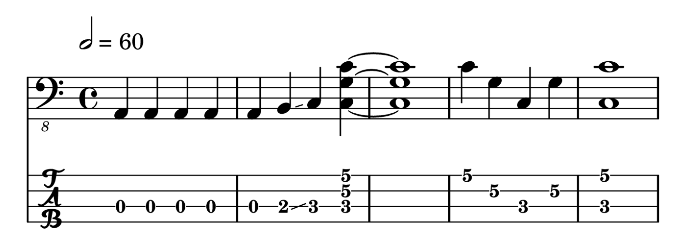

This section demonstrates how to create sheet music snippets in R
markdown documents using the LilyPond backend. To do this, use the set
of plot_music* functions that wrap around the
render_music* functions.
These abstract the process of rendering a sheet music snippet to png and loading the rendered image back into R to be displayed as a plot in an open graphics device or inserted into an R markdown code chunk.
While these functions abstract away the details of the process, this is not the same as making the plot completely in R. R is only displaying the intermediary png file. LilyPond is required to engrave the sheet music.
For R markdown you can alternatively render the png using the
corresponding render_music* function and then place it in
the document explicitly using knitr::include_graphics().
See render_music() for more details. Below are some example
snippets for guitar and bass.
Music objects
g <- as_music("a,4;5*5 b,4- c4 cgc'e'~4 cgc'e'1 e'4;2 c';3 g;4 c;5 ce'1;51")
b <- as_music("a,,4;3*5 b,,4- c,4 c,g,c~4 c,g,c1 c4;1 g,;2 c,;3 g,;2 c,c1;31")
summary(g)#> <Music string>
#> Timesteps: 14 (11 notes, 3 chords)
#> Octaves: tick
#> Accidentals: flat
#> Key signature: c
#> Time signature: 4/4
#> Tempo: 2 = 60
#> Lyrics: NA
#> Strings: 5 5 5 5 5 5 5 5432 5432 2...
#> Format: space-delimited time
#> Values: a,4 a,4 a,4 a,4 a,4 b,4- c4 <cgc'e'~>4 <cgc'e'>1 e'4 c'4 g4 c4 <ce'>1
summary(b)#> <Music string>
#> Timesteps: 14 (11 notes, 3 chords)
#> Octaves: tick
#> Accidentals: flat
#> Key signature: c
#> Time signature: 4/4
#> Tempo: 2 = 60
#> Lyrics: NA
#> Strings: 3 3 3 3 3 3 3 321 321 1...
#> Format: space-delimited time
#> Values: a,,4 a,,4 a,,4 a,,4 a,,4 b,,4- c,4 <c,g,c~>4 <c,g,c>1 c4 g,4 c,4 g,4 <c,c>1Snippet in R markdown chunk
The defaults for plot_music() include treble clef and no
tab staff. Plot the music object, g. As you can see, this
appears off by an octave because the guitar transcription should use
clef = "treble_8" instead of the default
clef = "treble".
plot_music(g)Above you can see the call to plot_music(g)in the
document since echo = TRUE for the code chunk. In an
interactive R session, this call draws the plot to the active graphics
device. The R markdown code chunk for inserting the above plot into this
document looks like this in the Rmd file.
```{r}
plot_music(g)
```The image will scale properly in R so that it does not distort.
However, the graphics device dimensions still matter. If you want to
avoid excessive whitespace for example, you may want to specify
knitr figure options,
e.g. fig.height=2, fig.width=7, globally or in a code
chunk.
The values you choose depend on how tall your sheet music snippet is. If you enter a long snippet in code, LilyPond may wrap this around to multiple lines in the png file it creates. Therefore, this may require some trial and error. Sheet music snippets are intended to be curated one-offs for inserting in documents.
Additional wrappers
There are various wrapper functions offering convenient, sensible default arguments based on the function name.
plot_music_tab(g) # tab staff only
plot_music_guitar(g) # 8va treble clef for guitar, plus tab staff
plot_music_bc(b) # bass clef
plot_music_bass(b) # bass clef and tab staff
Depending on the function, additional relevant arguments include
clef, tab, tuning and
string_names. Layout arguments include header,
paper, colors, transparent and
res. The function plot_music_tc() is
equivalent to plot_music().